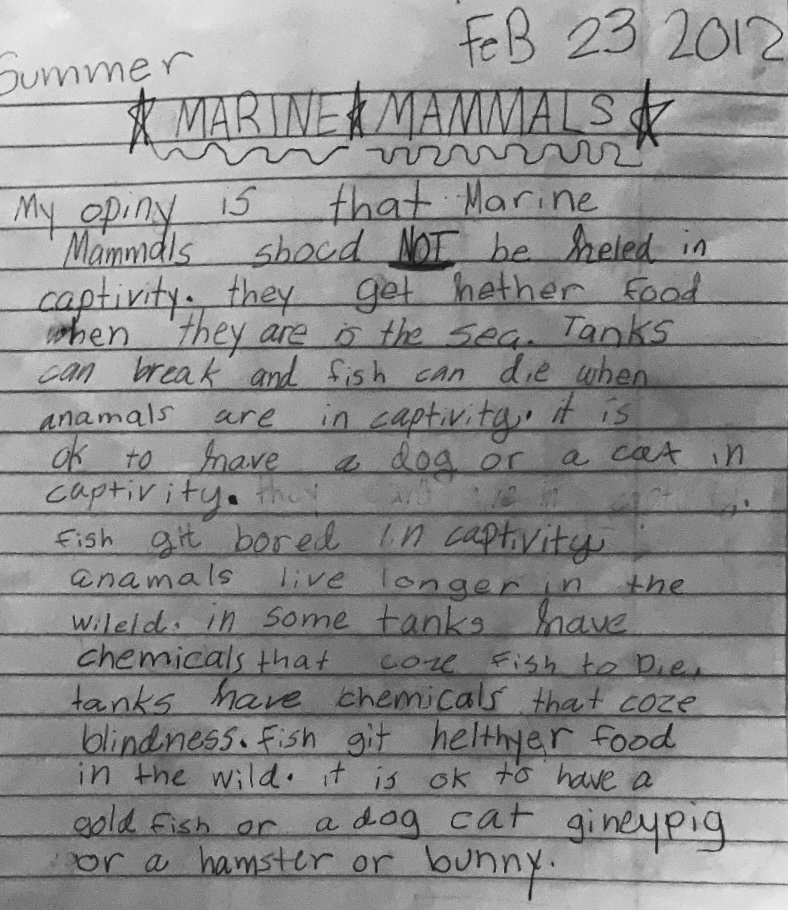
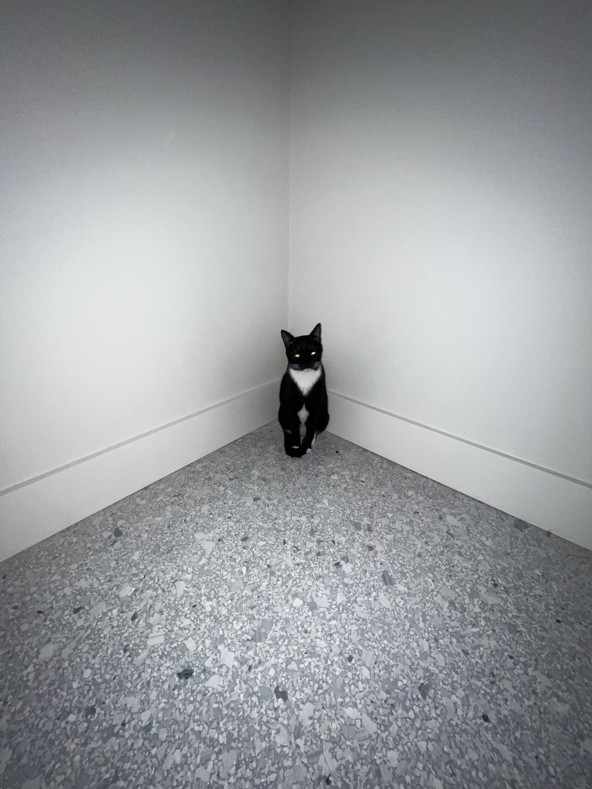

WHAT I'VE TAUGHT MYSELF > a manifesto
Written + Designed = Summer Padgett
Taking your own pictures will inspire and elevate your designs.
Look at it from far away. No one is analyzing your project like you are. Imagine seeing it for the first time; what would you think?
Your designs are not ugly, they are just ingrained in your head; boring. Wait and look at it with tomorrow's eyes. Rework, but know when to leave it be.
All the colors you use when designing are overwhelming. Keep it in B&W and save the color palette for the end, that’s the fun part anyway.
Simple doesn’t have to be too cold. Expressiveness doesn’t have to be too hot. Mix them and it’ll be just right.
Plan by drawing. Pinterest kills your thoughts and floods them with pre existing ideas.


Find where edges can be joined. Intersect them so they can connect with one another. Have them interact with each other, designs don’t like to be lonely.
It’s like reading a drawing.
Some of the best ideas come to you right before you go to sleep. You snooze, you lose. Write them down and draw them out.
What’s a sharp form’s best friend? A curved form. Opposites attract.
Maybe it should be really small. Maybe people have to search for the answers. Or maybe, it’s so big and in front of their face that they miss it completely Keep them on their toes.
The space between people working together is filled with conflict, friction, strife, exhilaration, delight, and vast creative potential. (An incomplete Manifesto for Growth - Bruce Mao)
If you like it, do it again. If you don’t like it, do it again. (An incomplete Manifesto for Growth - Bruce Mao)
Repair is not about styling or trends. There are no due-dates for repairable items. (Source: Repair Manifesto - Project 21)
It helps to get done. (Source: The Cult of Done Manifesto - Bre Pettis & Kio Stark)